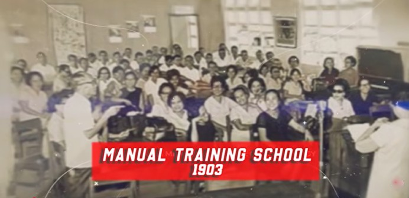
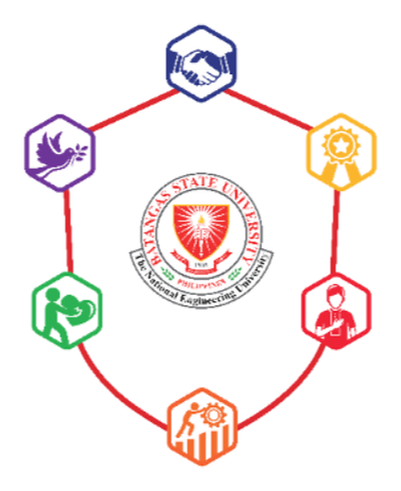

University Vision
A premier national university that develops leaders in the global knowledge economy.
The vision that guides every campus, college, and program of BatStateU.
Leading Innovations
Transforming Lives
Building the Nation
Get to Know BatStateU
Leading Innovations, Transforming Lives, Building the Nation.
Our Story
Batangas State University (BatStateU) traces its beginnings to 1903, when it was established as a Manual Training School for young men. Over the years, it underwent several transformations, becoming the Pablo Borbon Memorial Institute of Technology in 1968 and eventually a state university in 2001 through Republic Act No. 9045.
With its continuous growth and commitment to quality education, BatStateU achieved another milestone in 2022 when Republic Act No. 11694 officially declared it as The National Engineering University of the Philippines. Today, it continues to promote excellence in engineering, science, technology, research, and innovation.

Milestones
From a manual training school to The National Engineering University, each chapter reflects BatStateU’s commitment to quality education.
Explore our academics →Established as a Manual Training School for young men.
Became the Pablo Borbon Memorial Institute of Technology.
Converted into a state university through Republic Act No. 9045.
Declared The National Engineering University through Republic Act No. 11694.
University Vision
The vision that guides every campus, college, and program of BatStateU.
University Mission
A university committed to producing leaders by providing a 21st century learning environment through innovations in education, multidisciplinary research, and community and industry partnerships in order to nurture the spirit of nationhood, propel the national economy, and engage the world for sustainable development.
What Guides Us
Six values shape how the BatStateU community learns, leads, serves, and contributes to national development.

Quality and Recognition
Several engineering programs, including Civil, Electrical, Mechanical, Electronics, and Chemical Engineering, are accredited by the Accreditation Board for Engineering and Technology (ABET).
The BS Computer Science and BS Information Technology programs at BatStateU Alangilan are accredited by ABET’s Computing Accreditation Commission.
The university received international quality management certification from TÜV Rheinland Philippines, Inc.
Its Electronics Engineering program is recognized as a National Center of Excellence by the Commission on Higher Education (CHED).
Electrical Engineering, Mechanical Engineering, Development Communication, and Teacher Education are recognized as National Centers of Development.
Recognized in the 2025 World University Rankings for Innovation (WURI), 2026 THE Sustainability Impact Ratings, and 2025 UI GreenMetric World University Rankings.